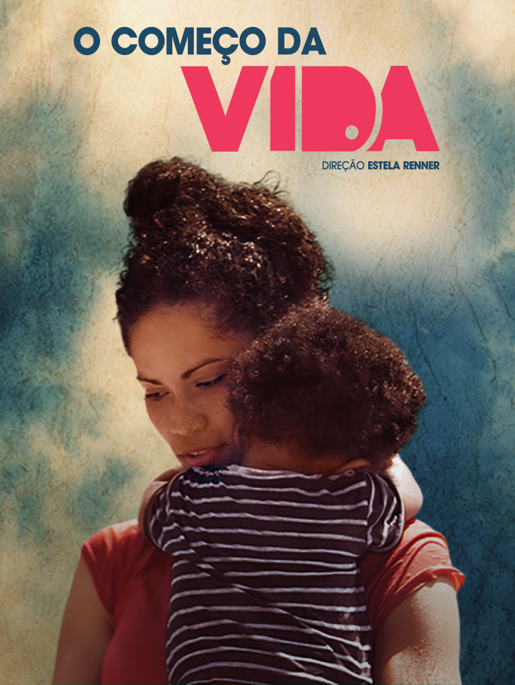
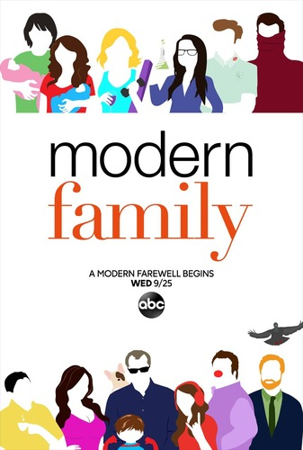
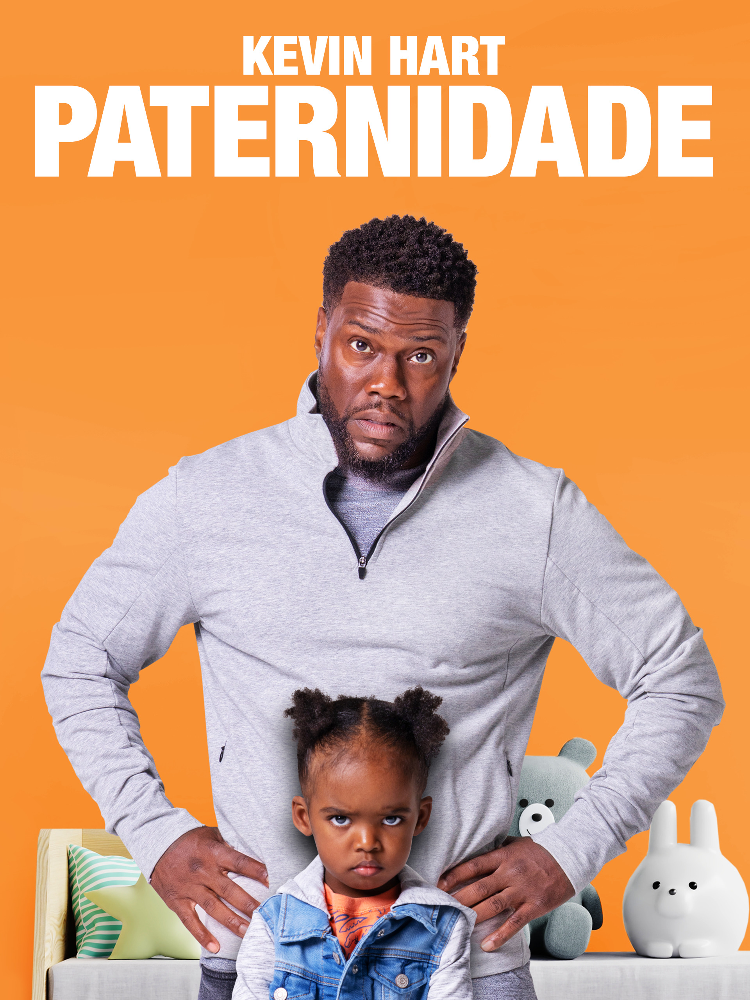

O Começo da Vida
Tipo: Documentário
Mostra como os primeiros anos de vida são importantes para o desenvolvimento infantil. Ajuda os pais a compreenderem o valor do afeto, da convivência e dos estímulos recebidos pela criança.
Manual de Dicas
Filmes, séries e livros para acompanhar sua jornada na paternidade
Ser pai também é aprender. Essas obras abordam o cuidado, o afeto, os desafios da família e a importância de participar da vida dos filhos

Tipo: Documentário
Mostra como os primeiros anos de vida são importantes para o desenvolvimento infantil. Ajuda os pais a compreenderem o valor do afeto, da convivência e dos estímulos recebidos pela criança.
Tipo: Filme
Acompanha uma mãe que tenta conciliar o trabalho e a vida familiar. É uma oportunidade para refletir sobre a divisão das responsabilidades e a importância de apoiar quem também cuida dos filhos.

Tipo: Série de comédia
Apresenta diferentes famílias e situações do cotidiano, incluindo conflitos, dificuldades e momentos de carinho. Com humor, mostra que não existe uma única maneira de construir uma família.

Tipo: Filme
Conta a história de um homem que precisa aprender a cuidar da filha após perder a companheira. A obra aborda as inseguranças, a adaptação e o amor envolvidos na criação de uma criança.
Tipo: Livro
De Adele Faber e Elaine Mazlish, apresenta maneiras de melhorar a comunicação com as crianças, compreender sentimentos e lidar com conflitos de forma respeitosa.